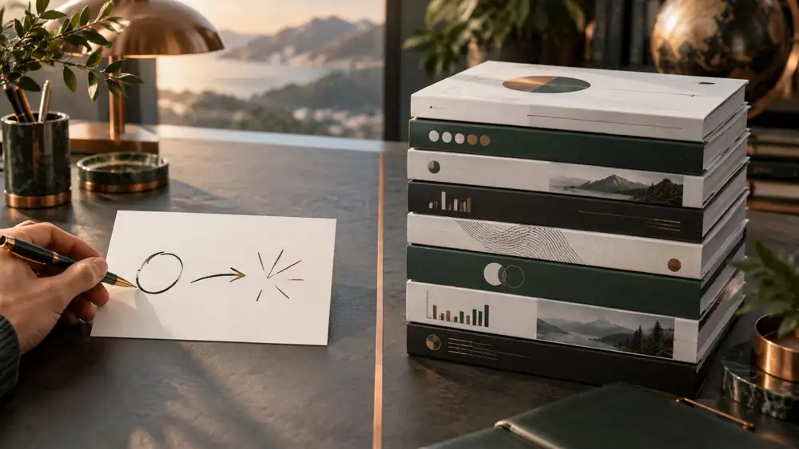
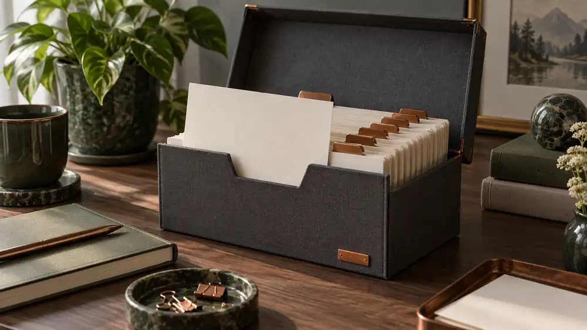

Рабочая машина
собственника
Первый час разбираемся в вашем бизнесе и технике.
Второй час собираем рабочую машину в Claude
Альберт Валеев
Нейропросвещение: обучение и внедрение ИИ в компаниях.
Предприниматели, собственники, руководители, команды компаний.
От первого помощника собственника до агентов, которые ведут процессы.
Что я понял из вашей анкеты
Автосалон
Машины в наличии и под заказ, команда от 16 до 50 человек. Ответственность на вас.
Ассистенты и дашборды
Автоматизировать и облегчить вопросы бизнеса и личной жизни.
Всё из десяти
Отметили все десять направлений. Что съедает время, пока сложно сказать.
Claude на MacBook
Пользуетесь регулярно. ChatGPT нет. VPN на ноутбуке и телефоне.
От личной эффективности к автономности: 8 встреч
Черновик. Точный план соберу после сегодняшнего разговора.
Разбираемся и собираем машину
Ваш бизнес и задачи, рабочая машина в Claude, голос, первый артефакт.
Задача с первого раза
Как ставить задачу, чтобы ответ попадал сразу: приёмы на ваших задачах.
Ассистенты
Ответы клиентам, объявления, обучение менеджеров.
Цифры и дашборды
Отчёты из таблиц и программ салона, дашборд на телефон.
Личный помощник
Почта, календарь, задачи по расписанию, поручения с телефона.
Голос и встречи
Протоколы, задачи из голосовых, контроль поручений.
Codex и первый агент
Агент, который работает сам: утренний отчёт, контроль задач.
Автономность
Связка агентов под салон и план на дальше.
Сегодня два часа, две части
Разбираемся
Ваш бизнес, команда, цифры, день и техника. Вопросы записываю на диктофон, из ответов соберём программу.
Собираем машину
Рабочая папка, правила для Claude, плагины и навыки, мессенджеры, голос, INDEX.md и показ артефакта.
ИИ-мышление: главное, чему учимся все 8 встреч
Как устроен ИИ
Что он умеет, где ошибается, за что отвечаете вы.
Зачем это вам
Что изменится в салоне и в вашем дне.
Как применить
Что спросить, с чего начать, как проверить.
Чем сделать
Claude, Codex, плагины, коннекторы. Кнопки последними.
Инструменты меняются каждый месяц. Мышление остаётся.
Поэтому сначала разбираемся, что вам нужно, и только потом ставим программы.
Разбираемся
Бизнес, команда, ваш день и техника.
Запись на диктофон
Бизнес и клиенты
Объём и марки
Какие марки, сколько машин в наличии, какая доля под заказ, сколько продаёте в месяц?
Откуда клиенты
Откуда приходят клиенты: Авито, Авто.ру, Дром, сайт, звонки, рекомендации? Что работает лучше всего?
Кто отвечает
Кто отвечает клиентам и как быстро? Что из переписки до сих пор отвечаете вы сами?
Где теряем клиентов
Где теряются клиенты: не ответили, не перезвонили, не дожали после тест-драйва?
Кредит и трейд-ин
Кредит, трейд-ин, страховка: кто этим занимается и сколько это даёт денег?
Где теряем деньги
Где, по ощущению, теряются деньги: склад, скидки, реклама, люди?
Команда, цифры, программы
Команда
Кто в команде из 16–50: продажи, оформление, маркетинг, бухгалтерия? Кто ключевые люди?
Цифры каждое утро
Какие цифры вы смотрите каждое утро, а какие раз в неделю? Кто их вам готовит и сколько это занимает?
Программы
В каких программах всё живёт: 1С, CRM, Excel, Google, тетрадь? Что выгружается в файл?
Задачи команде
Как вы ставите задачи команде и как проверяете, что сделано?
Решаю только я
Какие решения принимаете только вы и почему не можете их отдать?
Ручная работа команды
Что команда делает руками, хотя это можно было бы автоматизировать?
Вы и ваш день
Ваш день
Как выглядит ваш обычный день: с чего начинается, где больше всего дёргают?
Руками каждую неделю
Что вы делаете руками каждую неделю, хотя могли бы не делать?
Личное помощнику
Что из личной жизни хочется отдать помощнику: почта, календарь, напоминания, семья, покупки?
Утренний дашборд
Какой дашборд вы хотели бы видеть каждое утро на телефоне? Пять цифр.
Ассистенты
Что вы называете «ассистентами» в анкете: кто они и что делают?
Победа через 2 месяца
Что через два месяца должно случиться, чтобы сказать «не зря»?
Claude и техника
Claude сейчас
Как сейчас пользуетесь Claude: три последние задачи, что получилось, что бесит?
Подписка с Авито
Подписка с Авито: какой тариф (Pro или Max), на чью почту аккаунт, делит ли его кто-то ещё?
Чат или Code
Работаете в чате или уже открывали вкладку Code?
Почта и календарь
Какой почтой и календарём пользуетесь: Google, Яндекс, Mail.ru, Outlook?
Мессенджеры
Какие мессенджеры рабочие: Telegram, WhatsApp, MAX? Где сидят клиенты, где команда?
Какие данные можно
Что из данных салона можно давать нейросети, а что нельзя никогда?
Подписка с Авито: что проверяем
Риски
- Ваши переписки и файлы видят чужие люди
- Почта и мессенджеры откроются им же
- Аккаунт могут закрыть в любой день
- Лимиты делите с другими
Свой аккаунт
- Регистрация на вашу почту
- Оплата через посредника на ваше имя
- Вход только с вашего мака и телефона
- Всегда с включённым VPN
Ревизия вашей машины · 5 минут
Агент сам посмотрит, что стоит на маке, и скажет, чего не хватает. Ничего не меняет.
Итог первой части: что записываем
Три задачи
С них начинаем на этой неделе.
Пять цифр
Для утреннего дашборда на телефоне.
Личный помощник
Что отдаём ему в первую очередь.
Почта и мессенджеры
Что подключаем сегодня во второй части.
Техника
Чего не хватает до рабочей машины.
Победа
Что через два месяца скажет «не зря».

Собираем рабочую
машину в Claude
Папка, правила, плагины, мессенджеры,
голос и INDEX.md
Чат советует, агент делает работу

Отвечает в окне. Файл надо принести самому, результат забрать самому.
Работает в папке на вашем маке: открывает файлы, считает, сохраняет, проверяет.
Разница в том, что вокруг него: папка, правила, навыки, доступы.
Это и есть рабочая машина.
Из чего состоит рабочая машина
Ваше окружение: все файлы и результаты в одном месте.
Правила и «кто я», читаются всегда.
Как делать и стартовые наборы.
Руки агента: почта, календарь, мессенджеры.
Что агенту можно без вашего «да».
Карта понятий: агент это новый сотрудник
Правила и «кто я»
Правила компании и «кто я», читаются всегда. В Codex тот же файл называется AGENTS.md.
Как делать
Регламент одной операции, «как делать». Доступа ни к чему не даёт.
Пропуск к программе
Пропуск к программе (почта, диск, календарь). Даёт «руки», но не «как». Внутри это MCP.
Стартовый набор
Стартовый набор отдела одним пакетом. Внутри могут быть навыки, коннекторы, команды.
Установка за семь шагов
Все тексты целиком в шпаргалке, раздел «Установка». Копируем и вставляем.
Рабочая папка
«Автосалон ИИ» в Документах
Автопилот
Ваши правила: Instructions и CLAUDE.md
Разрешения
Сколько агенту можно без вашего «да»
Мастер-инструкция
Агент сам ставит плагины, навыки и коннекторы
Мессенджеры
Telegram, WhatsApp, MAX одной фразой
Голос
Handy с GigaAM и расшифровка записей
INDEX.md
Агент изучает ваши файлы и чаты
Машина собрана
Новая сессия: он знает вас и что где лежит
Шаг 1 · Рабочая папка: ваше окружение

Одна папка. Дальше всегда открываем её во вкладке Code, подпапки агент заведёт сам, когда понадобятся.
Шаг 2 · Автопилот собственника
Один текст в два места. Чат и Cowork: Settings → Your Claude → Instructions, вставляем руками. Вкладка Code: агент сам запишет его в файл ~/.claude/CLAUDE.md.
Шаг 3 · Разрешения: сколько агенту можно без вас
Безопасно, но медленно
- Подтверждаете каждое действие
- На установке это десятки нажатий
- Новичок устаёт и бросает
Делает сам, но под контролем
- Обычные действия без остановок
- Рискованные проверяет встроенный контролёр
- Отправку в мессенджерах запрещаем отдельно
Шаг 4 · Мастер-инструкция: агент ставит всё сам
Новая сессия Code в папке «Автосалон ИИ». Агент покажет план и после вашего «да» поставит всё по очереди. Пароль от мака вводите сами.
Что поставит мастер-инструкция
Superpowers
Рабочие режимы: сначала цель, потом план, разбор ошибок, проверка перед словом «готово».
Excel, Word, PowerPoint, PDF
Отчёты, договоры, презентации и таблицы готовыми файлами.
Playwright
Агент сам открывает сайты: цены конкурентов, объявления, проверка страниц.
Context7 и Sequential Thinking
Свежая документация и пошаговое мышление на сложных задачах.
Где это в приложении Claude руками
Plugins → Discover
Левая панель: Plugins (раньше Customize) → вкладка Plugins → Discover → выбрать → Add. Superpowers: сначала добавить каталог anthropics/claude-plugins-official.
Plugins → Skills
Там же раздел Skills → «+» → Browse skills → Add. Включённый навык Claude берёт сам, когда он подходит.
Plugins → Connectors
Gmail, Google Диск, Календарь и другие: Connect → вход в аккаунт сервиса. Или в чате «+» у строки ввода → Connectors.
Шаг 5 · Мессенджеры одной фразой
От вас: Telegram два кода из приложения, WhatsApp QR. MAX последним: VPN выключаете только на время скана QR. Отправку агенту запрещаем.
Шаг 6 · Голос: Handy и GigaAM
Диктовка в любое окно, всё на вашем маке, без подписки. Второй промпт в шпаргалке ставит расшифровку записей и видео на той же модели GigaAM.
Шаг 7 · INDEX.md: агент изучает вас
Коннекторы подключены, теперь агент сам смотрит ваши файлы и чаты и собирает оглавление «что у меня есть и где лежит». Ничего не отправляет и не трогает.
Проверка: машина собрана
Показ: закинул таблицу, получил артефакт

Обычный чат: скрепкой прикрепить demo-ostatki.csv из шпаргалки и отправить. Артефакт открывается справа, его можно открыть на телефоне.
Claude и Codex: работаем в связке
Тексты, документы, анализ, отчёты, думать вместе.
У агентов, которых соберём на встречах 7–8, под капотом Codex.
Одна папка, одни правила: CLAUDE.md для Claude, AGENTS.md для Codex.
Без зарубежной карты, через посредника.
Библиотека: 30 первых запросов под ваш салон
По три готовых запроса на каждое из десяти направлений, которые вы отметили в анкете.
Переписка и ответы клиентам
Ответ на запрос с Авито · Клиент просит скидку · Клиент пропал после тест-драйва
Тексты: объявления, посты, предложения
Объявление на Авито и Авто.ру · Пост о поступлении машин · Предложение для автопарка компании
Отчёты и цифры из таблиц
Артефакт из таблицы остатков · Продажи месяца по менеджерам · План и факт за месяц
Анализ рынка и конкурентов
Цены конкурентов на ту же модель · Обзор рынка автосалонов Уфы · Какие модели сейчас брать под заказ
Протоколы встреч и задачи из голосовых
Протокол планёрки из записи · Задачи из моего голосового · Контроль поручений за неделю
Документы и договоры
Разбор договора поставки под заказ · Условия сделки для клиента простым языком · Сравнить две версии договора
Инструкции и обучение команды
Скрипт входящего звонка · Регламент заявки с Авито · Тест для менеджеров
Маркетинг и реклама
План рекламы на месяц · Акции под Новый год · Разбор отзывов
Личный помощник
План недели · Что ждёт моего ответа в почте · Утренняя сводка на телефон
Стратегия и решения
Думаем вместе: расширять ли «под заказ» · Решение: за и против · План на 2027 год
До следующей встречи
Каждый день один запрос
Из библиотеки, 20–30 минут. За неделю 3–5 часов, как вы написали в анкете.
Своя выгрузка
Остатки или продажи в Excel: соберём на ней ваш настоящий дашборд.
Задача с первого раза
Как ставить задачу, чтобы ответ попадал сразу.
Машина собрана
Шпаргалка остаётся у вас:
все тексты установки и 30 готовых запросов